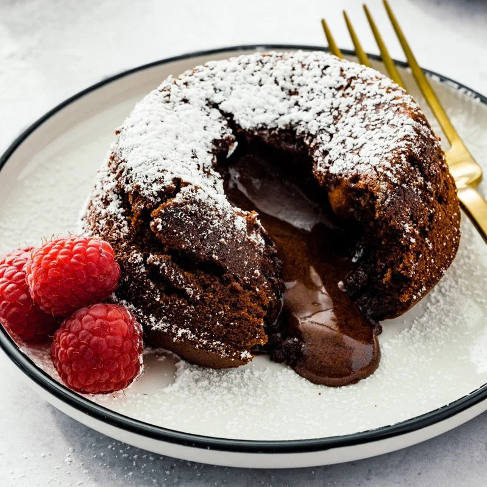

Divine Lava Cake

Credit: Sonja Overhiser
https://www.acouplecooks.com/chocolate-lava-cake/
Description
This lava cake is Stephanie's favorite lava cake in the whole world. Just look at this thing.
Ingredients
- 2 oz bittersweet (60%) chocolate bar
- 1/4 cup unsalted butter
- 2 eggs
- 1/3 cup granulated sugar
- 1/4 cup unsweetened cocoa powder
- 6 tablespoons all-purpose flour
- 1 teaspooon baking powder
- 1/4 teaspoon kosher salt
- 1/4 cup milk
Steps
- Preheat the oven to 450 degrees Fahrenheit.
- Fold a piece of parchment paper in half, then half again to get four layers. Trace the bottom of a ramekin on the parchment and cut out 4 circles. Use butter to grease the bottom and sides of ramekins. Place the parchment circles into the bottom of the ramekins and grease the parchment paper as well.
- Slice the butter into pieces and break the chocolate into small pieces. Place them in a glass measuring cup or glass bowl. Microwave for 30 seconds, stir, and then microwave another 20 to 40 seconds until completely melted when stirred. Allow to cool while you make the rest of the batter.
- In a larger bowl, beat the eggs with a whisk until fully combined and frothy. Then whisk in the dry ingredients and the milk. Whisk until smooth, then slowly add butter and chocolate mixture and whisk until just incorporated and smooth.
- Pour the batter evenly into the four ramekins. Place ramekins on a baking sheet and bake them for 11 minutes (or 10 minutes if baking at altitude). The cake should be risen, cracked across the top and just a little bit jiggly when the center is lightly tapped with your finger. (11 minutes is perfect in our oven.)
- Remove from the oven and rest the cakes for 2 minutes (it’s important to be precise here; the cakes still cook while in the ramekins). Carefully run a sharp paring knife around the outsides of the cake to let it loose from the ramekin. Using a hot pad, invert one lava cake onto a plate (careful, the ramekins are hot!). Wait 10 seconds before carefully removing the ramekin to unmold the cake, then remove the parchment circle from the top. The top of the cake will be either just cooked over or have a small circle of lava visible. If the cake collapses with too much lava, wait another minute before unmolding the other cakes, since they will continue cooking in the hot ramekin. (But do not leave the cakes in the ramekins too long: they will cook through and lose the lava!) If the cake doesn’t have enough lava, next time you make the recipe reduce the bake time by 1 minute.
- Dust with powdered sugar and serve immediately, using a spoon to open the cake and allow the lava to flow out.